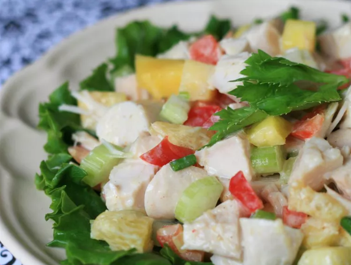

A tropical twist on the Waldolf Salad! Turkey breast and Pineapple are tossed with crisp ccelery, red beel pepper, and green onion, finished with a creamy curried mango dressing.
For the dressing, blend sour cream, chutney, lemon juice, honey, and curry powder in a small bowl. Mix well, and refrigerate until ready to use.
In a large bowl, combine turkey, red pepper, celery, pineapple, orange segments, and green onion. Add dressing, and toss well to coat. Refrigerate for 1 hour before serving.